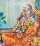

🙏 Our Saints
Guru-Shishya Parampara · Shree Kantheriya Hanumanji Dham, Surat

સેનાપતિ મહંતશ્રી વૈજનાથગીરીજી મહારાજ
(હરિદ્વાર)
સભાપતિ મહંતશ્રી કોટેશ્વરગીરીજી મહારાજ
(નેપાલવાલે)
મહંતશ્રી પ્રાગીરીજી મહારાજ
(બાપજી)
મહંતશ્રી પ્રભુગીરીજી મહારાજ
(સુરત)
મહંતશ્રી શિવગીરીજી મહારાજ
(પાલનપુર)